La vidéo de *Pursuing AI* lève le voile sur les fuites et les premières générations exclusives du très attendu modèle **Nano Banana 2** de Google, actuellement testé en circuit fermé par des créateurs et des plateformes sélectionnés. Ce rapport de recherche met en lumière une avancée technologique majeure dans le domaine de la génération d'images et de vidéos par IA, notamment en matière de cohérence textuelle, de réalisme anatomique et de gestion des détails complexes qui mettaient jusqu'à présent tous les modèles concurrents en échec. Le créateur structure sa démonstration en comparant frontalement les résultats de Nano Banana 2 avec les cadors du marché (ChatGPT, Grok, Human Image 3.0 et Seadream 4 High Resolution), prouvant la supériorité flagrante du nouveau modèle sur des cas d'usage réputés impossibles.
Sur le plan technique, la méthode du créateur repose sur l'analyse comparative de prompts d'extrême précision appliqués à l'ensemble de ces générateurs pour isoler les failles des IA actuelles face aux prouesses de Nano Banana 2. À travers l'examen de cas pratiques — comme le rendu parfait d'une heure précise sur le cadran d'une montre, l'intégration de texte complexe sur des surfaces en perspective (murs, feuilles de papier) ou encore la génération ultra-réaliste de visages de célébrités et de personnages de fiction —, la vidéo décortique les capacités brutes du modèle. Cette démarche méthodique permet de cartographier avec précision le fossé qualitatif qui sépare cette nouvelle version des standards actuels de l'industrie.
Pour les créateurs de contenu vidéo et les spécialistes de l'IA, les bénéfices de cette fuite sont considérables. Non seulement Nano Banana 2 redéfinit les attentes en matière de photoréalisme et de fidélité textuelle, mais il préfigure également un changement radical dans les workflows de production visuelle. La capacité du modèle à maintenir un réalisme saisissant sur des animations et à générer des visages de célébrités sans artéfacts — avant une censure publique inévitable lors de sa sortie officielle — offre des perspectives créatives inédites. Cette analyse offre ainsi aux professionnels une vision anticipée des standards de qualité qui domineront le marché dès le lancement public de l'outil.
Google se prépare à lancer Nano Banana 2, mais avant la grande sortie, ils le confient discrètement à certaines plateformes et créateurs sélectionnés. Et bien sûr, les gens commencent à le tester comme des fous. Aujourd'hui, je me suis plongé dans ces premières générations et ce que j'ai trouvé est absolument insensé. C'est Pursuing AI et vous regardez le Research Report.
Interface & Outils : Présentation face caméra et extraits visuels d'illustration (générations d'images IA) sans interface logicielle active démontrée.
Contenu textuel & Code : Textes illustratifs affichés à l'écran : "Nano Banana 2", "I AM SORRY JON.", ainsi que le logo de la chaîne "PAI" avec un cerveau relié à une puce et le titre "The Research Report".
Action / Démonstration : Affichage d'illustrations générées par IA et de séquences d'introduction de la chaîne vidéo.
C'est le genre d'exemple qui brise presque tous les générateurs d'images du marché. Aucun modèle ne peut rendre parfaitement l'heure sur une montre, comme 6:32, sans se tromper. Mais Nano Banana 2 le peut. J'ai testé exactement le même prompt sur ChatGPT, Grok, Human Image 3.0, Seadream 4 High Resolution.
Interface & Outils : Présentation vidéo comparative avec des captures d'écran de résultats de génération d'images.
Contenu textuel & Code : Texte du prompt en haut : "generate an image of a watch showing 6:32". Noms des modèles affichés sur les images : Seadr..., Grok, CHATGPT, Hunyan.
Action / Démonstration : Affichage comparatif des images de montres générées par divers modèles d'intelligence artificielle pour illustrer leurs limites à afficher correctement l'heure demandée.
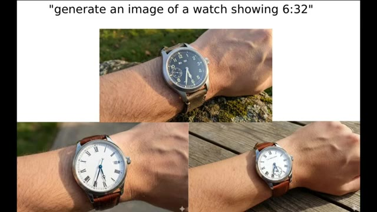
🔍 Agrandir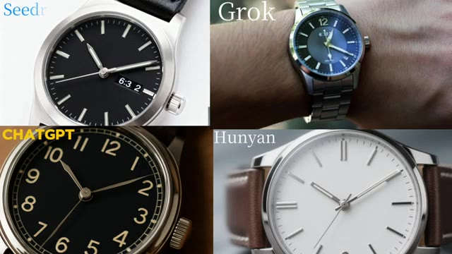
🔍 AgrandirChaque modèle a échoué. Seul Nano Banana 2 a réussi. Ensuite, regardez cet exemple. Il montre à quel point Nano Banana 2 est doué pour rendre du texte sur les murs. Le modèle a pivoté la caméra de 30 degrés et a quand même écrit le texte exact parfaitement, exactement comme le demandait le prompt.
Interface & Outils : Écran de présentation vidéo comparatif affichant des exemples de rendus de différents modèles d'IA et des prompts textuels.
Contenu textuel & Code : Noms des modèles affichés (Seedream, Grok, CHATGPT, Hunyan) et texte du prompt : "write this sentence on the wall and rotate camera 30 degrees left: 'new work even of sometimes out time make no will have see then now say garden the into would him on day can other tomorrow go some get it up'".
Action / Démonstration : Comparaison visuelle des performances de différents modèles d'intelligence artificielle sur le rendu d'éléments complexes comme des cadrans de montres et du texte sur des murs avec mouvement de caméra.
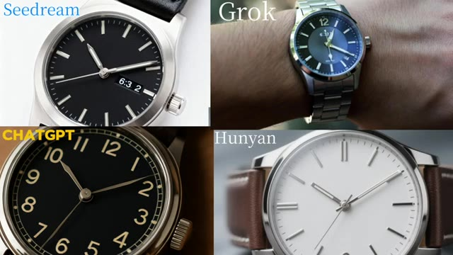
🔍 Agrandir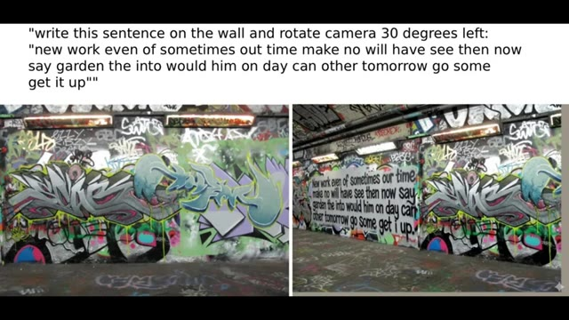
🔍 AgrandirEt puis il y a celle-ci. Elle a généré une image où la solution de la question est cachée à l'intérieur du visage du Père Noël et elle a réussi haut la main. Trop fort. Ensuite, regardez cet exemple. Vous voyez le papier dans la main de l'homme ? Le texte sur ce papier est également parfaitement exact. J'ai essayé les mêmes invites sur ChatGPT, Grok et Seadream 4K.
Interface & Outils : Présentation vidéo de démonstration d'IA générative d'images.
Contenu textuel & Code : Texte mathématique sur tableau noir ("Theorem: √2 is irrational... Q.E.D."). Prompt textuel : "a man holds up a letter on a podium, he is in front of a crowd, the letter says 'I have a dream...'". Texte sur les pancartes des images générées comparant différentes IA (ChatGPT, Grok, Seadream 4K).
Action / Démonstration : Le présentateur illustre ses propos en affichant des exemples d'images générées par IA démontrant la précision de rendu du texte textuel.
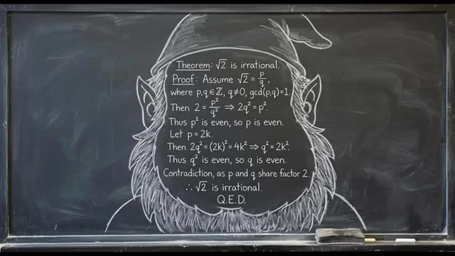
🔍 Agrandir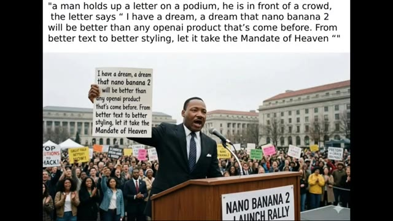
🔍 Agrandir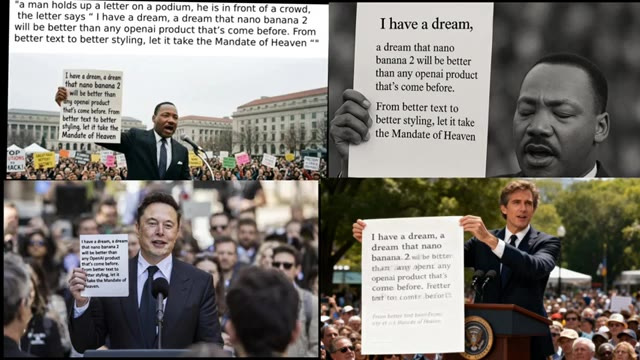
🔍 AgrandirChatGPT a bien produit une image similaire, mais elle était en noir et blanc, la foule manquait, et les yeux de la personne étaient fermés. Grok, je n'ai aucune idée pourquoi il a généré un visage ressemblant à Elon Musk. Oui, il a réussi le texte, et la génération de Grok est bonne. Mais comparé à tout cela, la génération de Nano Banana 2 est à un autre niveau.
Interface & Outils : Interface de présentation comparative de résultats d'IA générative.
Contenu textuel & Code : Le prompt textuel affiché en haut à gauche : "a man holds up a letter on a podium, he is in front of a crowd, the letter says 'I have a dream, a dream that nano banana 2 will be better than any openai product that's come before. From better text to better styling, let it take the Mandate of Heaven'". Quatre images différentes illustrant des variations de rendu (dont une étiquetée ChatGPT en haut à droite en noir et blanc, une image avec un visage ressemblant à Elon Musk en bas à gauche, et une autre en bas à droite).
Action / Démonstration : Présentation comparative côte à côte de différentes images générées par des intelligences artificielles pour évaluer leurs performances textuelles et visuelles.
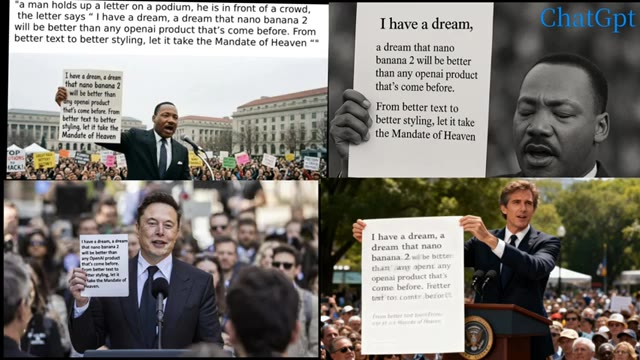
🔍 AgrandirEn matière de réalisme, Nano Banana 2 surpasse tous les modèles d'IA du marché. Regardez simplement ces exemples. Il génère le visage d'Elon Musk sans aucune erreur, et l'arrière-plan est impeccable. On dirait même l'une des premières photos d'Elon. Et puis il y a l'image de IShowSpeed. Personne ne croirait qu'elle a été générée par IA.
Interface & Outils : Présentation vidéo d'exemples d'images générées par intelligence artificielle (Nano Banana 2).
Contenu textuel & Code : Des visages de célébrités générés par IA dans des contextes réalistes, avec notamment un tampon de date "OCT 2018" sur la première image.
Action / Démonstration : Défilement visuel des exemples d'images générées par l'IA pour illustrer son réalisme.
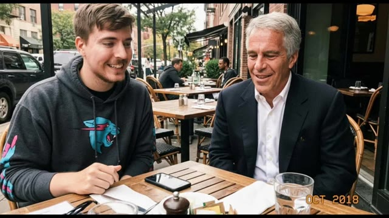
🔍 Agrandir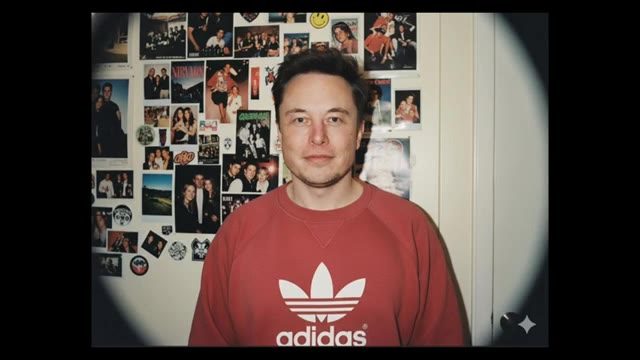
🔍 Agrandir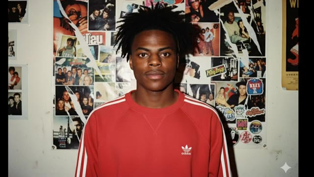
🔍 AgrandirC'est incroyablement réaliste. Comme le modèle est toujours en phase de test, il est capable de générer des visages de célébrités avec ce niveau de précision. Mais une fois qu'il sortira officiellement, il sera censuré, donc il ne pourra plus générer de visages de célébrités comme ça. Cela rend ces premiers résultats encore plus époustouflants.
Interface & Outils : Présentation de démonstrations visuelles et de clips générés par intelligence artificielle.
Contenu textuel & Code : Vues divisées et exemples d'images/vidéos de personnalités publiques générées de manière hyper-réaliste.
Action / Démonstration : Démonstration visuelle à l'écran illustrant les capacités du modèle d'IA à générer des visages de célébrités.
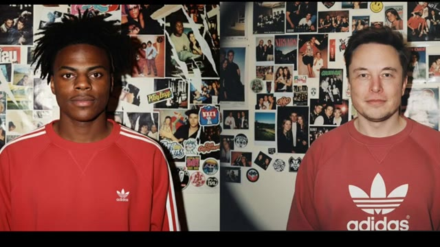
🔍 Agrandir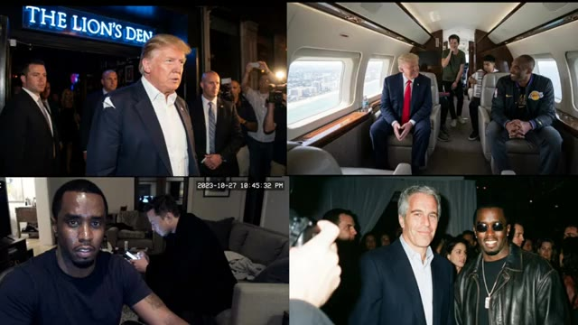
🔍 AgrandirEn ce qui concerne l'animation, Nano Banana 2 est également à un autre niveau. Il connaît parfaitement le visage de Goku, et regardez juste cet exemple. Le réalisme est fou. Si je ne vous avais pas dit que c'était généré par IA, vous ne l'auriez jamais deviné. Ça a l'air directement réel. Chaque exemple de Nano Banana 2 sur Internet a l'air incroyable. Les résultats sont propres, puissants et honnêtement bien en avance sur ce que la plupart des modèles peuvent faire en ce moment.
Interface & Outils : Démonstration de vidéos et images générées par intelligence artificielle (modèle Nano Banana 2).
Contenu textuel & Code : Visuels de styles variés : anime (Saitama, Goku), photoréalisme (horloge et verre de vin), personnages de jeux vidéo (Crash Bandicoot) et portraits générés.
Action / Démonstration : Présentation de différents exemples de rendus visuels de haute qualité générés par le modèle Nano Banana 2 pour illustrer son réalisme et sa maîtrise des personnages.
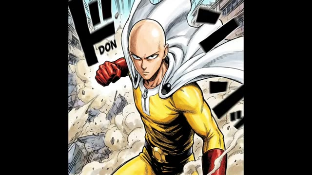
🔍 Agrandir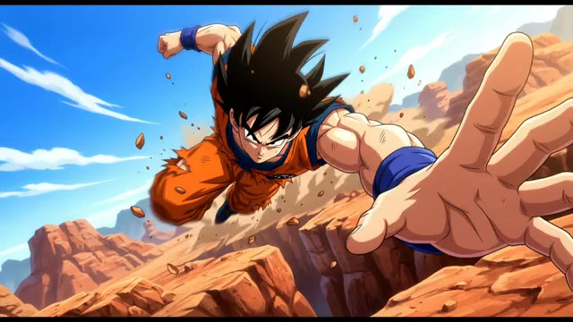
🔍 Agrandir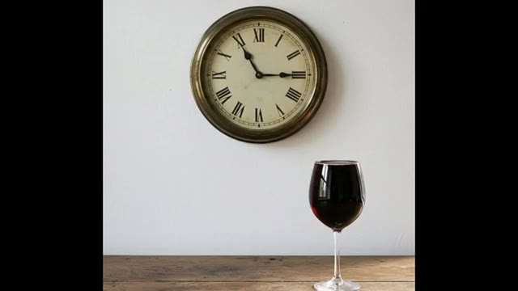
🔍 Agrandir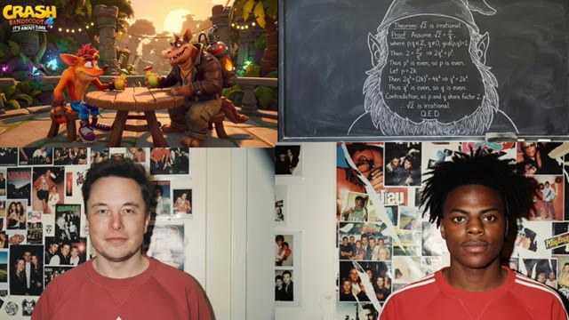
🔍 AgrandirVraiment impatient de le tester moi-même quand il sortira enfin. C'était donc mes recherches sur Nano Banana 2. Si vous avez aimé, assurez-vous d'aimer la vidéo et de vous abonner.
Interface & Outils : Jeu vidéo / Vidéo générée par IA (style Minecraft).
Contenu textuel & Code : On aperçoit des avatars cubiques représentant Donald Trump et Joe Biden armés d'épées en diamant, faisant face à des monstres (zombie, araignée, creeper) au pied des tours du World Trade Center dans un décor en blocs. La barre de vie et l'inventaire typiques de Minecraft sont visibles en bas de l'écran.
Action / Démonstration : Présentation d'un exemple de contenu vidéo absurde ou humoristique généré par intelligence artificielle pour illustrer les capacités de l'outil présenté.
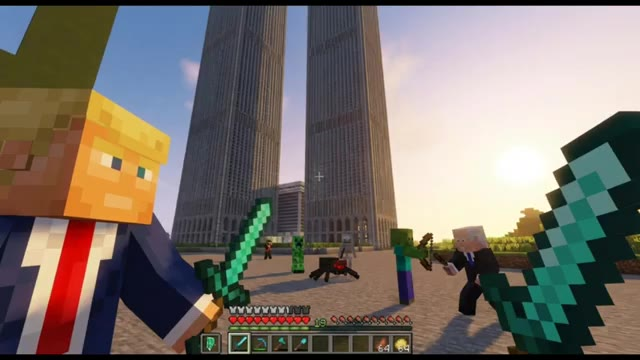
🔍 Agrandir